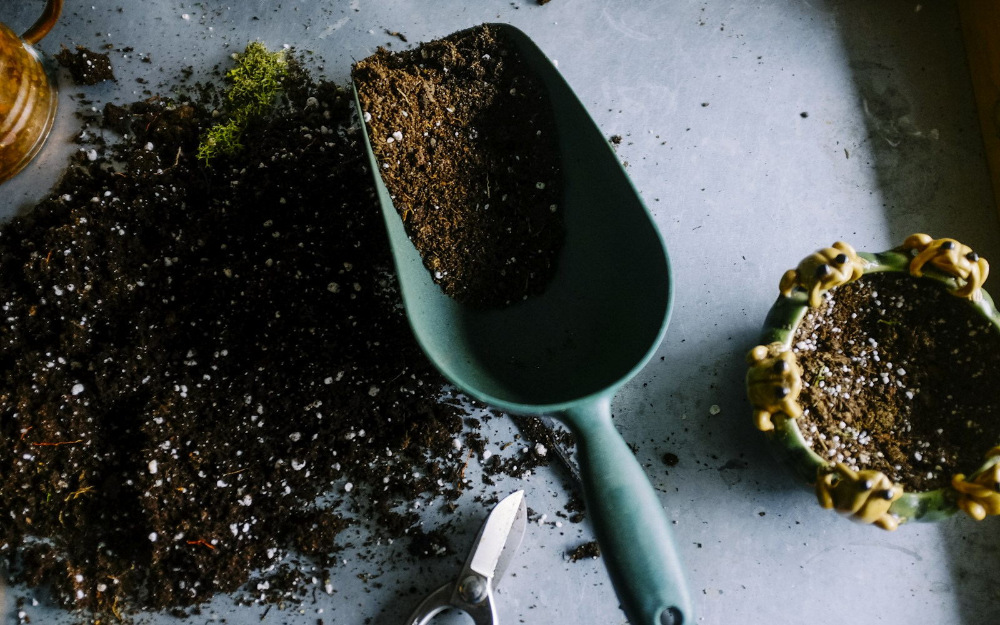

01 / 光照
先看看窗外的光
把植物带回家之前，先观察窗边一天的光线。朝向、遮挡与季节，都会影响叶片接收到的光。了解所在的位置，比急着添置一盆新的植物更有帮助。

A LITTLE GREEN, EVERY DAY
让一片新叶，提醒我们季节正在经过。
GROW SLOWLY
01 / 光照
把植物带回家之前，先观察窗边一天的光线。朝向、遮挡与季节，都会影响叶片接收到的光。了解所在的位置，比急着添置一盆新的植物更有帮助。
02 / 浇水
浇水没有适合所有植物的固定日历。摸一摸表层土壤，掂一掂盆的重量，再结合植物种类与通风情况判断。耐心观察，慢慢建立属于这扇窗的养护节奏。
03 / 记录
拍下叶芽刚展开的样子，记住搬动花盆的日期。小小的记录能帮我们理解生长的变化，也会在某个普通的午后，带来一点看得见的欣喜。
SEASONAL RHYTHM
春 / 观察新的叶芽，新的生长。
夏 / 留心留意通风、温度与水分。
秋 / 调整跟着光线变化移动花盆。
冬 / 等待接受缓慢，也是一种照顾。